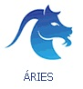

|  | ||
|
|
|
|
Regido pelo planeta Marte, Áries é o primeiro signo do zodíaco e é daí que vem tanto a capacidade que os arianos têm de reagir rápida e automaticamente diante de qualquer situação quanto sua competência para lidar com coisas novas, enfrentar situações de desafio ou participar dos momentos em que as coisas estão começando. Nada deixa os nativos de Áries mais desconfortáveis do que cumprir sempre a mesma rotina ou realizar tarefas que exijam imobilidade e paciência. Para quem nasce no tempo dos começos, tudo é possível, menos esperar. Por terem chegado neste mundo numa época em que os homens tomavam para si a tarefa de pôr a natureza em movimento, os arianos consideram naturais as situações em que o homem é desafiado a transformar as coisas e a criar uma nova ordem. Para eles, as coisas que acontecem na vida ou são estímulos ou são provocações. Nos dois casos existe uma necessidade comum: a resposta precisa ser imediata. |
Monica Horta, astróloga do Delas
O encontro da Lua com seu Sol natal cria um clima de fé e de confiança na vida e nas pessoas humanas. Você vai saber exatamente o significado da palavra felicidade e vai encontrar a força e a coragem para correr atrás dela. O céu se encarrega de fornecer as oportunidades. |